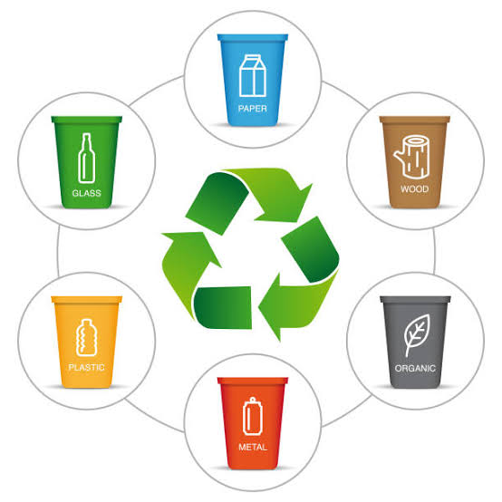
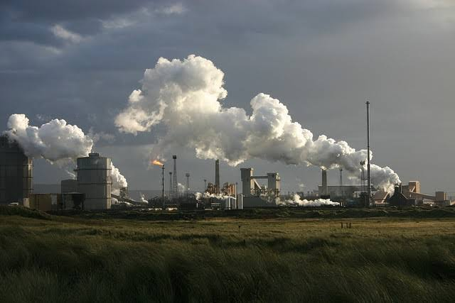
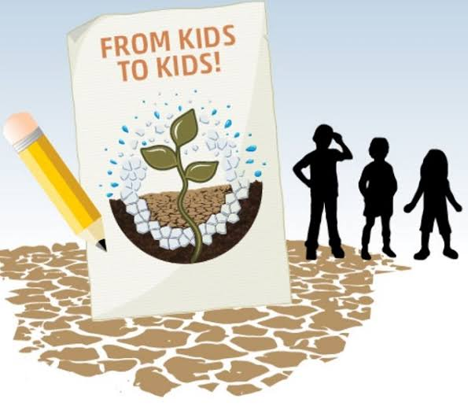

Soil Pollution
Welcome to our soil awareness website, where we're committed to promoting understanding and appreciation for the vital role that soil plays in our lives.
Soil is not just dirt, but a complex ecosystem that supports countless forms of life, from microscopic bacteria to towering trees.
Healthy soil is essential for growing nutritious food, supporting biodiversity, and mitigating the effects of climate change.
Unfortunately, soil degradation is a growing problem worldwide, as a result of unsustainable land use practices, pollution, and climate change.
By learning more about soil and how we can protect it, we can work towards a more sustainable and healthy future for ourselves and the planet.
So join us in exploring the fascinating world of soil, and discover how you can make a positive impact on this critical resource.
Preventive measures
Soil pollution include proper waste management, sustainable agriculture, and community awareness, which help reduce pollutants, minimize chemical use, erosion, and promote responsible land use to protect the environment, human health.

Proper waste management
Ensuring that waste, including solid waste and hazardous waste, is properly managed and disposed of according to regulations and guidelines.

Proper industrial practices
Implementing pollution prevention measures in industrial processes to prevent contamination of soil with toxic substances.

Education Awareness
Educating communities, farmers, and industries about the importance of soil conservation and pollution prevention
Resources
1. United Nations Environment Programme (UNEP): The UNEP website (https://www.unep.org) provides information on various environmental issues, including soil pollution, and offers resources on global efforts to address environmental challenges.
2. World Health Organization (WHO): The WHO website (https://www.who.int) offers information on the health impacts of soil pollution and provides guidelines on soil quality for different uses, as well as strategies for prevention and remediation.
3. National Portal of India: The National Portal of India is the official government portal for various info and services in India. Their website provides information on soil pollution, including guidelines, policies, and initiatives undertaken by the government of India to tackle soil pollution. Website link: https://www.india.gov.in/topics/environment/soil-pollution
4. Food and Agriculture Organization (FAO): The FAO website (http://www.fao.org) provides information on sustainable agricultural practices, including measures to prevent soil pollution, as well as resources on soil health and fertility.